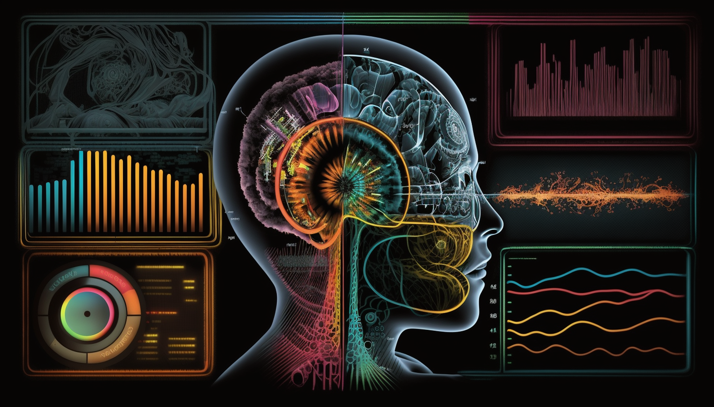
Tracking the evolution trajectory from Vaswani et al. (2017) to cutting edge multimodal model (Nagrani et al. 2022) is an interesting journey. I’m mostly interested in multimodal fusion, meaning how to fuse information from different sensory modalities. A juxtaposition of 2 evolution tracks speaks volumes.
- Text: 2017 OG encoder-decoder > hyperscaled decoder
- Multimodal: encoder-decoder and early fusion decoder > bottleneck mid fusion
To better appreciate the juxtaposition, a compare and contrast between the starting point and the cutting edge would be helpful.
Attention is all you need
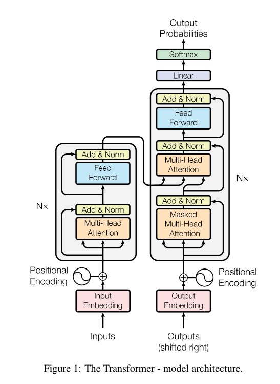
Staring at this seminal encoder decoder architecture long enough makes me realize few things:
- Attention is applied to a set, not strictly on sequence. Very general and versatile inductive bias.
- Sequence is just the result of information serialization. Text is natural sequence. Image tokens could be rasterized. Most of seq2seq magics are actually set2set plus optional positional information, such add-on info could be of many kinds.
- The whole encoder stack plus the cross attention is an adapter module (Pfeiffer et al. 2023) to condition an autoregressive generative decoder stack.
- The generative model doesn’t have to be autoregressive, or about text. The gold is multimodal representation learning. Generation is just one task.
- The power of transformers applies to multimodal fusion. Text is just the beginning.
Attention bottleneck
Inspired by this great presentation1 from Jack Rae, I realize that different form of bottleneck, ex: global workspace theory (Baars 2017), could be interpreted as different expression of Occam’s razor, which has deep root in information theory that regards effective compression as general intelligence.
Copy and paste is just brute force. Information bottleneck is suffering that builds intelligence.
Nagrani et al. (2022) introduces bottleneck mid fusion. I see it as successor to Gato’s (Reed et al. 2022) all you can eat style early fusion. This is a beautiful implementation of using bottleneck to foster learning intelligence.
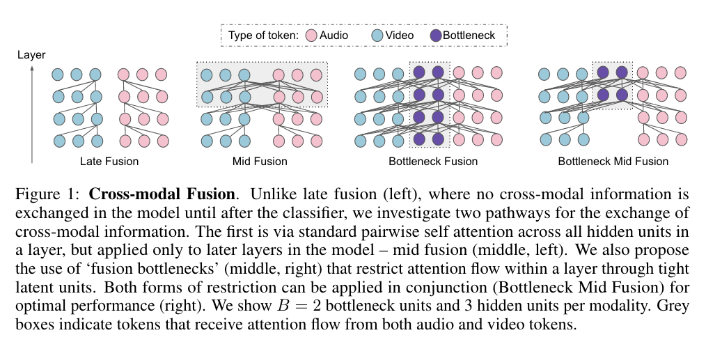
The beauty of bottleneck mid fusion comes from few realizations about multimodal learning:
- variations in learning dynamics between modalities
- different
noise topologies, with some modality streams containing more information for the task at hand than others- specialized input representations.
–Nagrani et al. (2022)
Resonate pretty well with Rombach et al. (2022)
Most bits of a digital image correspond to imperceptible details. While DMs allow to suppress this semantically meaningless information by minimizing the responsible loss term, gradients (during training) and the neural network backbone (training and inference) still need to be evaluated on all pixels, leading to superfluous computations and unnecessarily expensive optimization and inference. We propose latent diffusion models (LDMs) as an effective generative model and a separate mild compression stage that only eliminates imperceptible details.
You can see that noise topology exemplified with image. Bits are not equal to information, and human civilization builds semantics only on the subset of all information. Multimodal learning has to deal with different noise topology among different modalities. That’s why early fusion could work, but it would be far from Pareto frontier.
bottleneck mid fusion is making Pareto improvement by doing mid fusion with information bottleneck. Mid fusion affords different modality independent computation to weed out noises. The context window of bottleneck token is global workspace, on which joint representation could be learned. The hope is quality of joint representation could be foster by imposed limitation.
With basic understandings about the baseline and cutting edge, moving on to juxtaposition.
Text: 2017 OG encoder-decoder > hyperscaled decoder
Text2text treat input text as a modality. Info of input text is fused to text generative model to decide what to generate next. Encoder decoder architecture is basically a forced sparsity that implements a form of mid fusion and information bottleneck.
The whole encoder stack is isolated representation learning of input text. Regardless how many input tokens, as long as they are within context window, the output is a learned representation, a vector in latent space. Text to vector is a huge bottleneck. Useful information are encoded in the topological relationships in such latent space.
Take T5 for example, from input text to learned representation, it maps (context_window, vocab_size) -> (d_model) where vocab_size=32128, d_model=7682. I see a huge bottleneck. Input text flow through encoder stack and the resulting representation is hosted in this 768 dim latent space. Different input text would be projected as different vectors. The quality of intelligence is conditioned on the relationships among all possibly encoded vectors in such space, especially for out of distribution input texts.
Representation is later used in cross-attention to contribute relevant information to the text generation stack. The relevancy is conditioned on generated text and the relevant info added to the output of masked attention
All modular computation functions can be reduced to function composition: the output of the function \(f_{\theta_i}\) of a model is added to a new term that depends on a learned function \(f_{\varphi}\): \(f'_i(x) = f_{\theta}(x) + f_{\varphi_i}(x)\).
–Pfeiffer et al. (2023)
You can see masked attention + cross attention is that addition. The purpose of the whole encoder stack and cross attention is to infuse input info to change how text generative function works. This is what adapters do.
Why don’t we have 100b+ T5, but many 100b+ decoder only LLM?
Text only modality doesn’t deal with different noise topology. It has one learning dynamics with coherent input representation. Forced mid fusion is unnecessary engineering. That’s why independent encoder is redundant especially during the push of hyperscaling to squeeze out the last few bits.
…there are benefits to squeezing as much performance as possible out of large generative image models, as significant semantic information may lie in the
last few bits–Henighan et al. (2020)
Small model (<20b) is not as powerful as 100b+ model. Forced sparsity could be useful inductive bias to boost performance to a point. That’s why T5 works great for finetuning (Wang et al. 2022; Longpre et al. 2023). It’s meant to be specialized. However, when the goal is foundation model that saturates one modality as much as possible, scale is one working formula and the raw performance is self-evident. Big models are more sample efficient, learn faster and compress better.
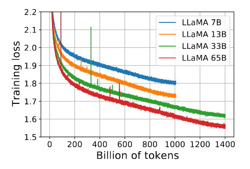
Multimodal: encoder-decoder and early fusion decoder
It would be easier to see the basic pattern with few examples.
# patterns
fused_info = fuse(modality_a, modality_b)
output = task(fused_info)Task itself is not that important. The point is learnable intelligence to get useful multimodal representation. Task is used to gauge whether the learned representation is useful.
RETRO: enc-dec text|text, text generation
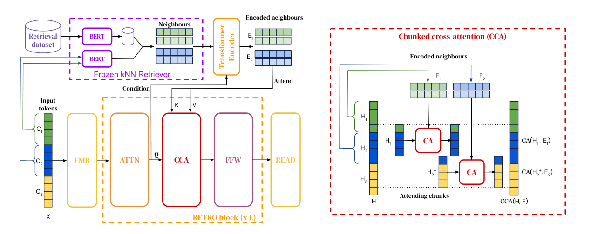
External memory as modality to power traditional text generation task. Retrieval as first class citizen not after thought as in-context retrieval (Mialon et al. 2023).
Flamingo: enc-dec image|text, text generation
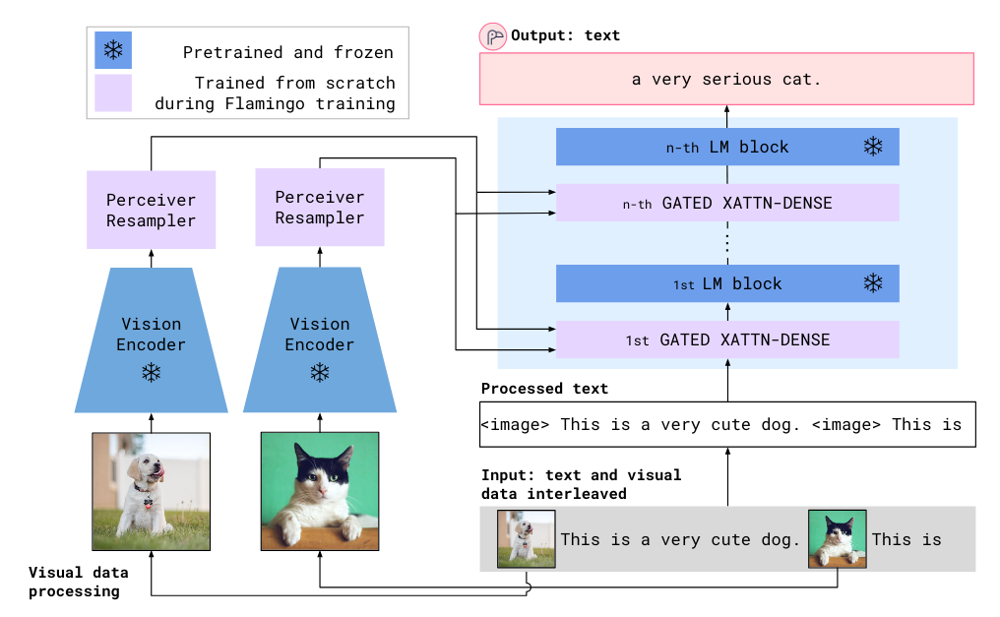
Interleaving image and text. VQA is the logical next step of ChatGPT.
latent diffusion: enc-dec image|text, image generation
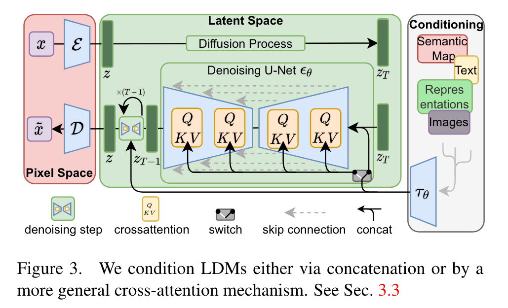
Conditioned diffusion for image generation.
Muse: image|text, image generation
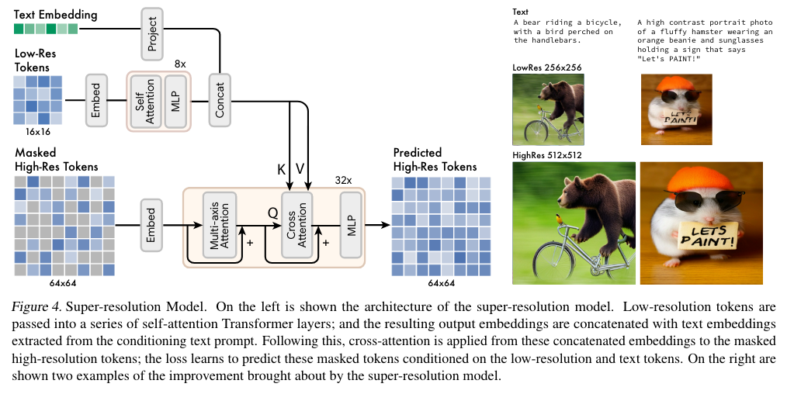
Like 2 layer enc-dec, diffusion free image generation. Very cool.
SpeechT5: enc-dec audio|text, text <-> audio generation
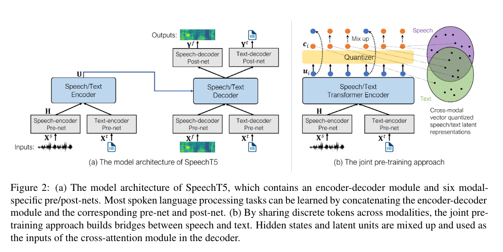
Pre-post processing modules are adapters. Close to the idea:
… image representations from vision models can be transferred as continuous prompts to frozen LMs by training only a single linear projection.
–Merullo et al. (2022)
Gato: decoder only all2all
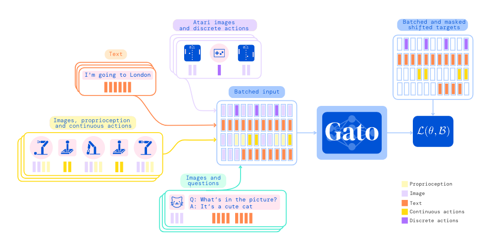
A 1.2B parameter decoder-only transformer with 24 layers, an embedding size of 2048, and a post-attention feedforward hidden size of 8196.
The major contributions are multimodal tokenization, embedding and training objectives. Pretty sure DeepMind didn’t expect naive early fusion decoder to be the final answer of multimodal learning.
Or it’s that easy… Just few missing pieces to deal with such as limited context window, quadruple computation of self-attention and so on. Given recent light speed of AI progress, I don’t think Gato is the answer but I’m not so sure anymore LoL.
All above are interesting. The holy grail is to find a scaling friendly formula for multimodal learning just like GPT3 did to text. Scaling friendly in terms of:
- Simple, easy, parallelizable architecture.
- BIG data.
- Self supervised objective function.
Current multimodal models are far from settling down on the architecture. Image caption dataset is great but one simply can’t expect to find enough (x, natural language) supervision for every modality. Too many hard to describe intelligence going on daily. Try to explain the internal state of playing piano or the touch of a perfect golf swing. There would always be some modalities that have small cross-modal latent representation. Language is useful but not the universal multimodal substrate.
I just don’t see current mutation of multimodal enc-dec or simple multimodal decoder architecture are there yet. To be fair, some are already very useful.
Back to bottleneck mid fusion
Both architecture and choice of modalities are interesting.
architecture
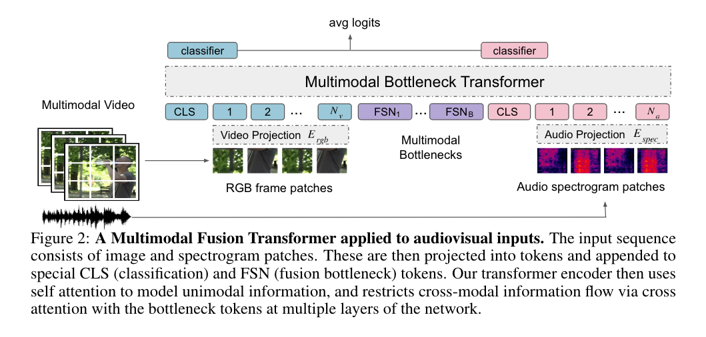
Intuitively, late fusion and early fusion can’t be optimal. Remember we want to scale like crazy. Manually engineered enc-dec is not optimal as well. The paper use few bottleneck token and bottleneck transformer to replace the whole encoder plus cross attention to decoder. The size of bottleneck token could be a hyperparameter to control the size of cross-modal latent space as in Ao et al. (2022).
The architecture is simple and elegant.
modality
Given the following context:
- Text is done. Mobile phone kind of done that innovations are still expected but the field is a perfect competition market. The speed, price and quality of
ChatGPT APIis crazy.3 (text, image) -> imageis in the instruction finetuning stage (Zhang and Agrawala 2023; L. Huang et al. 2023).
(text, image) -> textis improving super fast (Koh, Salakhutdinov, and Fried 2023; Li et al. 2023; S. Huang et al. 2023)
(image, audio) -> x is a good proxy to think about how and what <12 month baby could learn. It is right at the multimodal research frontier. I see this as the last frontier before embodied learning and some even argue body is not necessary for high intelligence. Reviewing my daily activity, input and output, the idea of body is not necessary for average level intelligence finds support lol.
Video is abundant. Learning dynamics and noise topology of image and audio are real challenges. Yes we could use natural language to bridge them but that is boring and even it works to an extend, better solution is expected.
Outro
I’m facing 2 problems to further exploring this track of research:
- Weak information theory understanding.
- Weak engineering capabilities to carry on experiments effectively.
Aghajanyan et al. (2023) could help me get oriented to information theory wrt multimodal research but the theoretical gap is too big to bridge with just one paper. Time to read textbooks.
End of procrastination. Back to code and read.